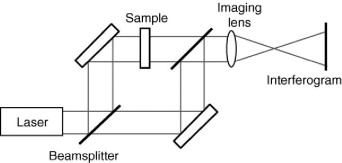
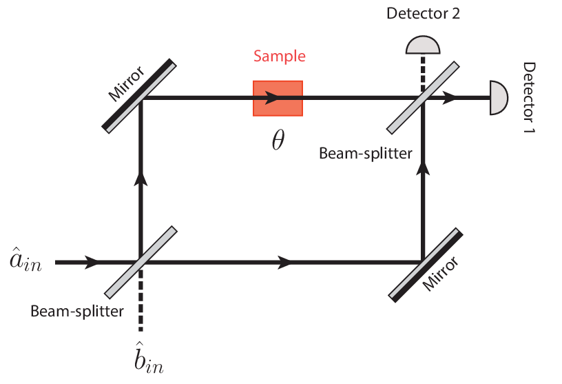

Optical device which utilizes the phenomenon of interference.
We can measure small displacement, RI changes, and surface irregularities.

If light is reflected form lower to high RI media, there will be phase shift \(\pi\) - reflection.
To achieve interference, light should be in-phase.
Before Beam-splitter (near the imaging lens),
path through the sample will be \(2\pi\) phase change.
other path will be \(\pi\) phase change.

For detector 1,
The path through the sample there will be \(0\) phase change. \(2\pi\)
The other path, there will be \(\pi\) phase change \(2\pi\)
For detector 2,
The path through the sample there will be \(\\pi\) phase change. \(2\pi + \pi\)
The other path, there will be \(0\) phase change \(\pi + 0\)